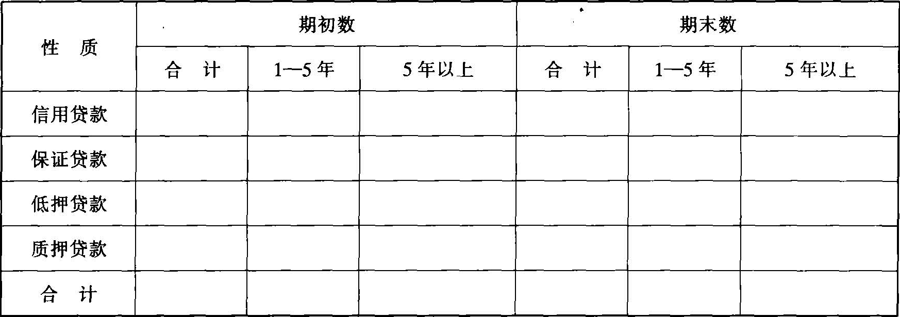
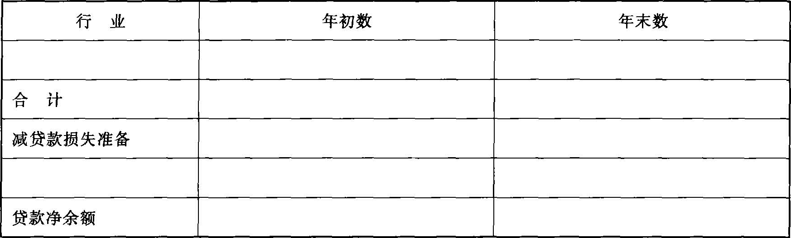

中国证券监督管理委员会
关于发布《公开发行证券的公司信息披露编报规则》第18号的通知
证监会计字〔2003〕3号
各上市公司：
为进一步完善上市公司信息披露规范体系，提高上市公司信息披露质量，保护投资者的合法权益，我会制定了《公开发行证券的公司信息披露编报规则第18号——商业银行信息披露特别规定》，现予发布，请遵照执行。
中国证券监督管理委员会
2003年3月19日
公开发行证券的公司信息披露编报规则第18号——商业银行信息披露特别规定
第一条 为规范公开发行证券商业银行（以下简称商业银行）的信息披露行为，保护投资者的合法权益，依据《中华人民共和国公司法》、《中华人民共和国证券法》、《中华人民共和国商业银行法》等法律法规及中国人民银行、中国证券监督管理委员会（以下简称“中国证监会”）的有关规定制定本规定。
第二条 商业银行为公开发行证券编制招股说明书、上市后编制年度报告、财务报表附注时，除应遵循中国证监会有关招股说明书、年度报告内容与格式准则以及财务报告的一般规定外，还应遵循本规定的要求。
第一章 招股说明书
第三条 商业银行应披露下列各种风险因素，分析其对财务状况与经营成果的影响：
（一）信用风险，包括：
1.重点分析信用风险分布情况、信用风险集中程度与信贷质量，例如目前的贷款组合、客户集中性等情况；
2.银行管理层用于信用风险管理及控制的主要政策与组织安排。
（二）流动性风险，包括：
1.说明管理层对此的明确政策，是否已建立用于监控此风险的管理信息系统和其他内部控制制度，对流动性风险管理水平的评估情况；
2.分析自身的规模和所处的经营环境，结合财务报表及其附注，说明流动性如何受到不利因素的影响，这些不利影响因素包括（但不限于）：信贷需求的大幅度增长、大量履行各种贷款的承诺、存款水平剧减、国内或国外利率的急剧变化等；
3.分析资产与负债在期限、结构上的匹配情况，其对某一类资金来源的依赖程度，银行短期可兑现的流动资产、短期融资能力和成本，银行在货币市场上的信誉，同时应披露银行是否有紧急融资计划来处理突发事件；
4.分析资本充足率对流动性的影响。
（三）披露因汇率变化而产生的风险，如汇率变化对外汇交易、对持有外币资产和负债的影响等。
（四）披露因利率变动而产生的风险，如银行所采用的利率政策、利率的变动对银行获利能力和财务状况的影响，并对此种影响进行敏感性分析。
（五）披露技术和人为因素而产生的风险，如电脑系统不可靠、舞弊、欺诈行为和资产保全措施不得当等产生的风险。
（六）披露因国家法律、法规、政策的变化而产生的风险，如税收制度、经营许可制度、外汇制度等的变化对银行的影响。
（七）其他风险，如我国加入世界贸易组织后，更多的外资商业银行被允许进入中国信贷市场等所产生的风险。
银行在分析上述风险时，应明确说明对法规规定的有关资产负债指标的遵循情况。
第四条 商业银行应建立健全内部控制制度，并在招股说明书正文中专设一部分，对其内部控制制度的完整性、合理性和有效性作出说明。
商业银行还应委托所聘请的会计师事务所对其内部控制制度及风险管理系统的完整性、合理性和有效性进行评价，提出改进建议，并以内部控制评价报告的形式作出报告。内部控制评价报告随招股说明书一并呈报中国证监会。
所聘请的会计师事务所指出以上三性存在严重缺陷的，商业银行应予披露，并说明准备采取的改进措施。
第五条 商业银行计划将所募集资金用于增设分支机构的，应披露所需资金数额、拟设地点等内容；募集资金仅用于增加资本的，可不必说明其具体投向；募集资金用于更新设备、收购兼并等其他用途时，需详细披露募集资金投向。
第六条 商业银行应在介绍发行人情况时详细披露其所属分行各自的名称、地点、职员数和资产规模以及各支行、储蓄所数量及地区分布等基本情况。
第七条 商业银行应披露贷款损失准备计提以及贷款损失核销制度的审慎性与有效性情况，说明其是否满足如下要求：
（一）定期进行细致的信贷风险质量分析；
（二）关注所有贷款（无论是以单个贷款为基础或是以贷款类别为基础）；
（三）将贷款按相似的风险特征分类，考虑不同风险的实际影响；
（四）考虑影响贷款可收回程度的所有已知的内部及外部因素，并以可靠的最新数据为基础；
（五）采用系统的合乎逻辑的方法综合估算预计损失，并确保按照会计制度、准则的要求计提贷款损失准备。
（六）方法的采用遵循一贯性，在必要时根据影响可收回程度的新的因素及时调整该方法；
（七）由胜任的专业人员进行分析、估计、审阅及其他与确定贷款损失准备相关的工作；
（八）编制完备的书面资料，清晰阐明有关的政策、分析及依据；
（九）管理层定期对贷款损失准备计提以及贷款损失核销制度进行检查与调整。
第八条 商业银行应披露如下不良资产信息：
（一）最近三年年末贷款损失准备的计提情况，包括：
1.最近三年年末贷款的“五级”分类情况，各级贷款的金额以及损失准备计提比例；
2.最近三年年末特种准备的计提比例；
3.最近三年年末一般准备的计提比例。
（二）从发放时间、区域分布等方面分析不良贷款的期限与结构。
（三）逾期贷款的期末余额、期限结构及逾期情况。
（四）应收利息和其他应收款项坏账准备的提取情况，坏账核销程序与政策。
第九条 商业银行应披露资本充足情况，包括列示（应列明简单的计算过程）最近三年每年年末的风险资产总额、资本净额的数量和结构，以及最近三年每年年末和按月平均计算的核心资本充足率、资本充足率，并分析其在最近三年的变化趋势、原因和其他情况。
第十条 商业银行应披露前三年主要贷款类别按月度计算的年平均余额及年平均贷款利率。
第十一条 商业银行应就其所持政府债券和贷款披露如下内容：
（一）持有金额重大的政府债券的有关情况，包括面值、利率、到期日；
（二）重组贷款金额及其中逾期部分金额；
（三）贷款的集中度，即贷款量列前十名的客户贷款金额占贷款总额的比例；
（四）贴现占贷款总额比例超过 20%（含20%）的，披露其金额及重要构成。
第十二条 商业银行应披露前三年主要存款类别按月度计算的年平均余额及年平均存款利率。
第十三条 商业银行采用纳税影响会计法核算所得税费用，递延税款借方金额较大的，应分析递延税款的转回期间及转回金额。
第十四条 商业银行存在逾期末偿付债务的，应对其金额、利率、债权人、未按期偿还的原因、预计还款期等作详细说明。
第十五条 商业银行应披露最近三年每年年末和按月平均计算的年平均如下财务指标（应列出简要的计算过程）：贷款质量比例、存贷款比例、短期资产流动性比例、拆借资金比例、国际商业借款比例、利息回收率等。
对以上各指标在最近三年的重要变化趋势、原因以及其他有关情况，还应作出简要分析。
第十六条 商业银行应披露可能影响其财务状况和经营成果的主要表外项目的总额及其重要情况，这些表外项目包括银行承兑汇票、融资保函、非融资保函、开出即期信用证、开出远期信用证、贷款承诺、外汇合约、有追索权的资产销售、重要的空白凭证等。
第十七条 商业银行应聘请有商业银行审计经验的、具有执行证券期货相关业务资格的会计师事务所，按中国独立审计准则对其依据中国会计和信息披露准则和制度编制的法定财务报告进行审计。此外，应增加审计内容，聘请获中国证监会和财政部特别许可的国际会计师事务所，按国际通行的审计准则，对其按国际通行的会计和信息披露准则编制的补充财务报告进行审计。
增加审计时需关注的内容包括：损失准备的提取及不良资产的处置情况；重大表外项目及其对财务状况和经营成果的影响；不同服务对象、经营项目及经营区域的资产质量、获利能力和经营风险；法定财务报告与补充财务报告之间的主要差异等。
招股说明书正文中的财务资料均应摘自法定财务报告。补充财务报告作为招股说明书附录披露，供投资者判断商业银行财务状况和投资风险时参考。【依据《关于不再实施特定上市公司特殊审计要求的通知》于2007.03.08废止】
第二章 年度报告
第十八条 商业银行应披露截至报告期末前三年年末如下财务数据：风险资产总额、资本净额的数量及结构、贷款损失准备、总负债、存款总额、长期存款及同业拆入总额、贷款总额、各类贷款余额。
商业银行应披露截至报告期末前三年年末及按月平均计算的下述年均财务指标：核心资本充足率、资本充足率、贷款质量比例、存贷款比例、短期资产流动性比例、拆借资金比例、利息回收率。
第十九条 商业银行应按前述第七条的规定，披露其贷款损失准备计提制度以及贷款损失核销制度的有关情况。
第二十条 商业银行董事会应在其报告中披露如下事项：
（一）下属分支机构情况（包括名称、地址、职员数、资产规模、下属网点数量及地区分布）；
（二）报告期末的资本结构，包括核心资本、附属资本和资本净额（以上项目按中国人民银行计算口径和国际银行业计算口径分别列示）
（三）信用风险状况。包括信用风险管理、信用风险暴露、信贷质量和信用风险缓释技术利用情况等，具体分为：
1.产生信用风险的业务活动；
2.信用风险管理和控制政策；
3.信用风险管理的组织结构和职责划分；
4.资产风险分类的程序和方法；
5.报告期末贷款的“五级”分类情况，各级贷款损失准备金的计提比例：
6.贷款损失准备的期初数、本期计提数、本期转回数、本期核销数及期末数；一般准备、专项准备和特种准备应分别披露；
7.列示报告期末前十名的客户贷款余额占资本净额的比例；同时描述对贷款客户集中度的风险控制；
8.贷款的行业、地区和客户类别集中度分析；
9.不良贷款分析；
10.重组贷款的年末余额及其中逾期部分金额；
11.本年主要贷款类别按月度计算的年均余额及年平均贷款利率；
12.本年主要存款类别按月度计算的年均余额及年平均存款利率；
13.信用风险缓释技术利用情况。
（四）流动性风险状况。包括能反映其流动性状况的有关指标，分析影响流动性的因素，说明本行流动性管理策略。
（五）操作风险状况。包括由于内部程序、人员、系统的不完善或失误，或外部事件造成的风险，并对本行内部控制制度的完整性、合理性和有效性作出说明。
（六）其他风险状况。包括其他可能对本行造成严重不利影响的风险因素。
以上风险因素能作定量分析的应作定量分析；定量分析时应披露分析的方法。
（七）待处理抵债资产的构成和减值准备计提情况；
（八）不良资产的报告期末余额，本年为解决不良资产已采取及拟采取的措施；
（九）可能对商业银行财务状况与经营成果造成重大影响的表外项目的年末余额及其重要情况；
（十）前一报告期末所披露风险因素本年内给商业银行造成的损失情况。
第二十一条 商业银行应聘请有商业银行审计经验的、具有执行证券期货相关业务资格的会计师事务所，按中国独立审计准则对其依据中国会计和信息披露准则和制度编制的法定财务报告进行审计。此外，应增加审计内容，聘请获中国证监会和财政部特别许可的国际会计师事务所，按国际通行的审计准则，对其按国际通行的会计和信息披露准则编制的补充财务报告进行审计。
增加审计时需关注的内容包括：损失准备的提取及不良资产的处置情况；重大表外项目及其对财务状况和经营成果的影响；不同经营业务及经营区域的资产质量、获利能力和经营风险；法定财务报告与补充财务报告之间的主要差异。
年度报告正文中的财务资料应与法定财务报告一致，补充财务报告应作为年度报告的附录披露。【依据《关于不再实施特定上市公司特殊审计要求的通知》于2007.03.08废止】
第二十二条 商业银行应对内部控制制度的完整性、合理性与有效性作出说明。
商业银行还应委托所聘请的会计师事务所对其内部控制制度，尤其是风险管理系统的完整性、合理性与有效性进行评价，提出改进建议，并出具评价报告。评价报告随年度报告一并报送中国证监会和证券交易所。
所聘请的会计师事务所指出以上三性存在严重缺陷的，商业银行董事会应对此予以说明，监事会应就董事会所作的说明明确表示意见，并分别予以披露。
第二十三条 商业银行编制年度报告摘要时，应包括上述第十八条至第二十二条的主要内容。对其中的财务指标，可不必列出计算公式。法定财务报告与补充财务报告之间存在重大差异的，应在摘要中予以说明。
第三章 财务报表附注
第二十四条 商业银行应在主要会计政策中披露如下内容：
（一）说明贷款的种类和范围，应计贷款转为非应计贷款的标准，及非应计贷款的会计处理方法。
（二）说明贷款五级分类情况以及计提贷款损失准备的范围和方法，一般准备、专项准备以及特种准备的计提比例及确定依据。根据个别贷款的实际情况认定的准备，应说明认定的依据，如根据对借款人还款能力、财务状况、抵押担保充分性等的评价。
（三）说明回售证券的计价方法、收益确认方法。
（四）利息收入的确认方法。
（五）对于外汇交易合约、利率期货、远期汇率合约、货币和利率套期、货币和利率期权等衍生金融工具，应说明其计价方法。采用公允价值的，还应说明公允价值取得方法，如市场比价、未来现金流量等。
（六）对于投机活动的衍生金融工具及用于套期保值目的的其他衍生金融工具，应说明损益的确认方法，及将衍生金融工具确认为套期保值的标准。
第二十五条 商业银行在财务报表主要项目注释中应披露：
（一）分类列示存放中央银行款项，披露计算依据。
（二）按存放境内、境外同业披露存放同业款项。
（三）按拆放境内、境外同业列示拆放同业款项。
（四）按贷款性质（如信用贷款、保证
贷款、抵押贷款、质押贷款等）分类披露短期贷款的期初数、期末数。
（五）应按如下格式披露应收利息及其坏账准备：
（六）应按性质（如国债、金融债券回购）披露回购证券。
（七）应按下列格式披露中长期贷款：

（八）按贷款风险分类的结果披露贷款的期初数、期末数。对不良贷款，还应按性质（如信用，保证，抵押和质押）分类披露。
以上第四款、第五款、第七款、第八款中如有持本公司5%以上（含5%）股份的股东单位贷款，应在各项目注释中说明。
（九）应按下列格式披露贷款损失准备情况：
1.若本期某些贷款计提损失准备的比例或金额较大，应说明计提的标准和理由；
2.说明对某些金额较大且逾期账龄较长的贷款不计提或计提损失准备比例较低的理由；
3.以前年度计提损失准备的比例或金额较大的贷款，如在本期全额或部分收回，应说明原确定计提比例的理由及现收回的原因；
4.在本期大幅度改变损失准备计提比例或金额的贷款，应说明原确定计提比例的理由及本期发生重大变化的原因。
5.如已批准核销的损失贷款的金额较大，应说明其性质和金额。若实际核销的损失贷款涉及关联方款项，还应单独披露。
（十）应按下列格式披露同业拆入：
（十一）应按下列格式披露存入承兑汇票保证金、信用证开证保证金、外汇买卖交易保证金等短期保证金：
（十二）应披露应付利息的计提方法、余额及变动情况。
（十三）应按下列格式披露发行的短期债券：
（十四）应披露银行承兑汇票、融资保函、非融资保函、贷款承诺、开出即期信用证、开出远期信用证、金融期货、金融期权等表外项目的年初数、年末数及其他具体情况。
第二十六条 商业银行应披露委托交易的期初数、期末数。
第二十七条 商业银行应披露金融工具的风险头寸，如信贷风险、货币风险、利率风险、流动性风险等。
第二十八条 商业银行应披露资本充足状况，包括风险资产总额、资本净额的数量与结构、核心资本充足率与资本充足率。
第二十九条 商业银行应按下列格式披露按币种列示的资产负债情况：
第三十条 商业银行应按如下格式披露贷款分布情况：
1.按行业分类的贷款情况

2.按地区分类的贷款情况
第三十一条 商业银行应按以下格式披露资产流动性情况：

第三十二条 本规定由中国证监会负责解释。
第三十三条 本规定自发布之日起施行。中国证监会此前颁布的“公开发行证券的公司信息披露编报规则”第1、2与7号、《商业银行招股说明书内容与格式特别规定》（证监发〔2000〕76号）、《商业银行财务报表附注特别规定》（证监发〔2000〕76号）与《商业银行年度报告内容与格式特别规定》（证监发〔2000〕80号）同时废止。